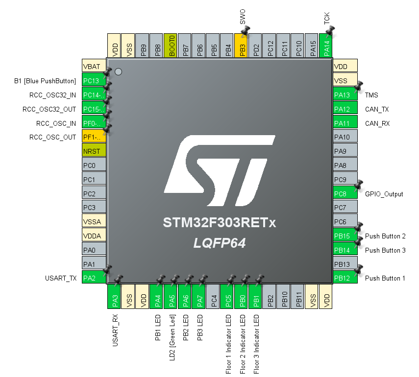

Along with Emiliano and Besart I wired up the read buttons to the STM32.
The Floor Controllers have all of their LEDs wired the same. They all use PC8 as an output pin to light up the button. For the buttons themselves each STM32 is wired slightly differently. Floor 1 uses PB12, Floor 2 uses PB15, and Floor 3 uses PB14.
The Car Controller has 3 different buttons so it needs to be qired slightly differently. The actual buttons are the same: Floor 1 uses PB12, Floor 2 uses PB15, Floor 3 uses PB14. The LEDs will be different though. Floor 1 uses PC9, Floor 2 uses PC8, and Floor 3 uses PC6.
Car Controller wiring.
Elevator button is lit
Programming the STM32
I programmed the Floor Controllers to light up the LEDs when the button is pressed. When the button is depressed the light will stay on until the elevator reaches the requested floor
I programmed the Floor Controllers to use UART. Specifically the Floor Controllers use USART2 as virtual UART when debugging. The UART is set to print whenever a button is pressed. The UART will also print when there is a CAN message. This allows use to easily monitor the CAN bus and see what is being sent. The STM32 translates the CAN messages into natural language. (i.e. Elevator Controller sent Floor 1)
I programmed the Car Controller. This one is a bit different then the Floor Controllers. It will use three different buttons and three different LEDs.

The current pinout for the STM32
The STM32s will display which floor the elevator is at.
The STM32s will receive CAN messages and display them via UART.
CAN ID Issue
I've been running into an issue with the CAN ID. Before I was using the STM32 with the ID 0x0100 (i.e. the supervisory controller) This was working perfectly. However, I'm now testing with the correct id (i.e. 0x0201 for Floor 1 Controller) This has presented an issue where the command that my STM32 is sending isn't moving the elevator. I've tried seting the message 0x01 and 0x05. Neither of these were working. I've tried changing the ID and that wasn't working either.
I just figured out that my STM32s aren't moving the eleator because the Raspberry Pi isn't set to sense the message and tell the elevator controller to move the elevator controller.
Raspberry Pi Programming
Due to a group member traveling I did not have access to the Raspberry Pi code. This required me to create my own Raspberry Pi code. Using the pre-existing Raspberry Pi code on the Raspberry Pi I created an application to receive and transceive. It will also print what the CAN bus is communicating in natural language.
Floor Controler 2 making a request, Supervisory Controller passing that on to the Elevator Controller, and the Elevator Controller reporting that the elevator is on floor 2
Elevator Videos
Besart and I took videos of the elevator working.
Both the Raspberry Pi and the STM32 will print the CAN messages.